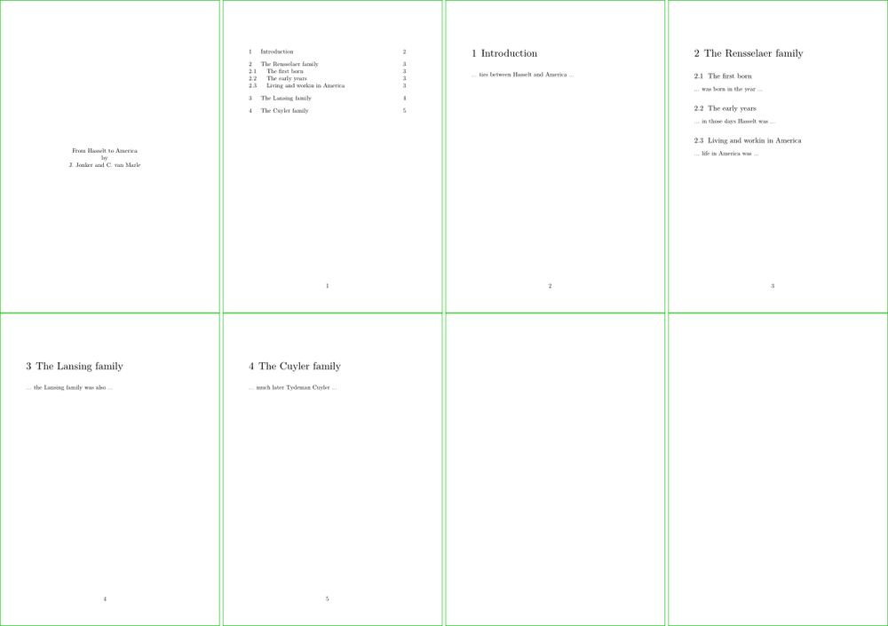
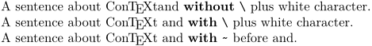
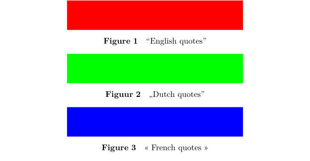
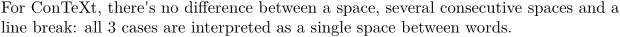
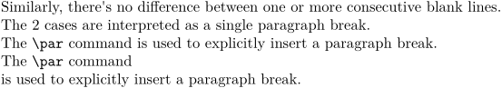

Focuses on organizing the overall content and defining the structure of the document. Includes sections, headings, paragraphs, and content hierarchy to ensure a logical flow.
Contents
The input file
Let's assume you want to create a simple textbook. It has some structure and contains a title page, a few chapters, sections, and subsections. Of course, there is a table of contents.
ConTeXt can create such a document automatically if you offer the right input by means of a text file. So first, you have to create an input file. An input file consists of a name and an extension, usually .tex. If you create a file with the name mybook.tex, you will find no difficulties in running ConTeXt. Note that spaces in the filename are not allowed.
An input file could look like this:
\starttext \startstandardmakeup \midaligned{From Hasselt to America} \midaligned{by} \midaligned{J. Jonker and C. van Marle} \stopstandardmakeup \placecontent \startchapter [title=Introduction] ... ties between Hasselt and America ... \stopchapter \startchapter [title={The Rensselaer family}, reference=rensselaer] \startsection [title={The first born}] ... was born in the year ... \stopsection \startsection [title={The early years}] ... in those days Hasselt was ... \stopsection \startsection [title={Living and workin in America}] ... life in America was ... \stopsection \stopchapter \startchapter [title={The Lansing family}, reference=lansing] ... the Lansing family was also ... \stopchapter \startchapter [title={The Cuyler family}, reference=cuyler] ... much later Tydeman Cuyler ... \stopchapter \stoptext
You can use any text editor.
The input file contains the text you want to typeset and the ConTeXt commands. A ConTeXt command begins with a backslash \. With the command \starttext, you indicate the beginning of your text.
A command is sometimes followed by an argument, which is enclosed by curly braces {}. The command \midaligned{From Hasselt to America} that you see in the example will have its effect on From Hasselt to America. The actions may be:
- start a new line
- place the text in argument in the middle of the page
Sometimes you will see two brackets [] directly after the command. These brackets are used to feed specific options to the command. The command \startchapter [title={The Cuyler family}, reference=cuyler] that you see in the example will create a chapter entitled The Cuyler family, and labelled cuyler for references. Its actions will also affect the design, typography, and structure. The actions may be:
- start a new page for this chapter
- increase the chapter number by one
- place the chapter number in front of the chapter title
- reserve some vertical space
- use a big font
- put the chapter title (and page number) in the table of contents
- label this chapter for potential future reference.
The commands in your input file can take different forms, but let's move on.
Process the input file
We assume that you have installed and initiated ConTeXt LMTX correctly so that you can run it from the command line in your working directory. You can refer to the ConTeXt installation procedure .
If you want to process the mybook.tex input file, you should type at the command line prompt:
context mybook.tex
The extension .tex is not needed. See the context script for more information on the context command.
After pressing Enter, processing will be started. ConTeXt will show processing information on your screen. During the processing of your input file,'ConTeXt will also inform you of what it is doing with your document. For example, it will show page numbers and information about processing steps. Furthermore, it gives warnings. These are of a typographical order and tell you when line breaking is not successful. All information on processing is stored in a log file that can be used for reviewing warnings and errors, as well as the respective line numbers where they occur in your file.
If processing is successful, the command line prompt will return, and ConTeXt will produce the file mybook.pdf. The abbreviation PDF stands for Portable Document Format. This is a platform-independent format for printing and viewing with a PDF reader.
If you have process the above example file with ConTeXt, you would obtain a very simple document with a title page, a few numbered chapters and section headers, and a table of contents (because of \placecontent). Here is a representation (scale can be different from your version).
- 
When you use a configurable text editor, you can also run ConTeXt from that editor. More information on that topic can be found in the Text Editors page. You may want to start with TeXworks.
Special characters
You have seen that ConTeXt commands are preceded by a \ (backslash). This means that \ has a special meaning to ConTeXt. Aside from \, there are other Special characters that need special attention when you want to use them
\ % { } ~ $ _ ^ | #
A short focus a the % character. All text between \starttext...\stoptext will be processed while running ConTeXt. Sometimes however you may have text fragments you don’t want to be processed or you want to comment on your ConTeXt input file. If you preceed your text with the percentage sign % it will not be processed.
Remarks about whitespace after a command
Because you will necessarily meet this case where you have to pay attention to what happen to the whitespace just after a command: sometimes you will want to ensure that there is a white space, then you want to use \⌴ (backslash followed by a whitespace) or the ~ character:
-
A sentence about \ConTeXt and \bold{without} \tex{} plus white character. A sentence about \ConTeXt\ and \bold{with} \tex{} plus white character. A sentence about \ConTeXt ~and \bold{with} \type{~} before and.
- 
Setup area
Every document is started with \starttext and closed with \stoptext (or with the variant \startdocument and \stopdocument). All textual input is placed between these two commands and ConTeXt will only process that information.
Before \starttext, there can be some commands but no content. These commands are here to configure / customize / set up the typesetting information and rules. As a consequence, the area before \starttext is called setup area (or preamble).
Minimal customization
There are three things you'll probably want to customize systematically :
- the size of the page, with \setuppapersize
- the font and its size, with \setupbodyfont
- the language in which your document is written, with \mainlanguage
% This is the setup area of the document % the percent characters allowsConTeXt to treat these 2 lines as comments \setuppapersize[A4] % it will be not typeset \setupbodyfont[pagella,12pt] % but the commands here are taken into account \mainlanguage[fr] % for the typesetting of the actual content \starttext This is a one line document. % your content \stoptext
\mainlanguage, with the language tag you wish to use for the document content, takes care of:
- defining the language of auto-generated language elements, like the title of the table of contents or the appendix, the labels,
- defining the hyphenation rules
- defining the quotation marks and the spacing rules.
See below:
-
% Default is \mainlanguage[en] \startplacefigure[title=\quotation{English quotes}] \midaligned{\blackrule[width=6cm,height=1cm,color=red]} \stopplacefigure {\mainlanguage[nl] \startplacefigure[title=\quotation{Dutch quotes}] \midaligned{\blackrule[width=6cm,height=1cm,color=green]} \stopplacefigure} {\mainlanguage[fr] \startplacefigure[title=\quotation{French quotes}] \midaligned{\blackrule[width=6cm,height=1cm,color=blue]} \stopplacefigure}
- 
Words, lines, paragraphs
For ConTeXt, there's no difference between a space, several consecutive spaces and a line break: all 3 cases are interpreted as a single space between words.
-
For ConTeXt, there's no difference between a space, several consecutive spaces and a line break: all 3 cases are interpreted as a single space between words. - 
Similarly, there's no difference between one or more consecutive blank lines: the 2 cases are interpreted as a single paragraph break. The \par command is used to explicitly insert such a paragraph break.
-
Similarly, there's no difference between one or more consecutive blank lines. The 2 cases are interpreted as a single paragraph break. The \tex{par} command is used to explicitly insert a paragraph break. The \tex{par} command \par is used to explicitly insert a paragraph break.
- 